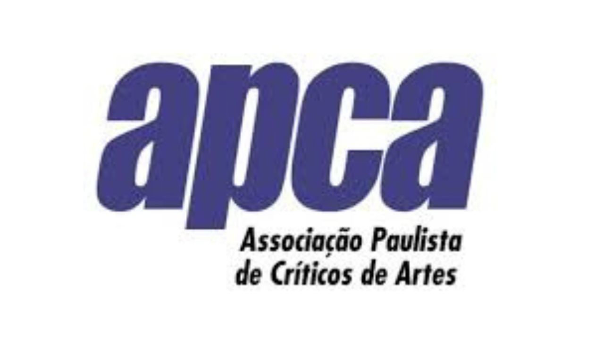

APCA elege os melhores de 2025 nas artes e marca cerimônia de entrega para maio em São Paulo

Em assembleia geral realizada na noite de segunda-feira (26), no Sindicato dos Jornalistas Profissionais do Estado de São Paulo, a APCA (Associação Paulista de Críticos de Artes) escolheu os melhores de 2025 em 11 categorias: Arquitetura, Artes Visuais, Cinema, Dança, Literatura, Música Erudita, Música Popular, Rádio, Teatro, Teatro Infanto-Juvenil e Televisão.
“A APCA celebra 70 anos de atuação ininterrupta na defesa, reflexão e valorização das artes no Brasil. Sete décadas marcadas pela independência crítica, pelo reconhecimento da excelência artística e pelo diálogo permanente com a cena cultural. Uma história que reafirma o papel da crítica como memória, pensamento e impulso para o futuro da arte brasileira”, afirma Celso Curi, presidente da APCA.
A 70ª cerimônia de premiação com a entrega dos troféus está prevista para maio, no Teatro Sérgio Cardoso, em São Paulo, em parceria viabilizada pela Associação Paulista Amigos da Arte (APAA) e a Secretaria de Estado da Cultura. A APCA informa que está em busca de apoios e patrocínios.
Vencedores APCA 2025 (por categoria)
Arquitetura
Trajetória: Teuba Arquitetura
Obra de Arquitetura no Brasil: Gustavo Penna — Memorial de Brumadinho
Obra de arquitetura em São Paulo: SIAA e Apiacás — Sesc Franca
Resistência urbana: Teatro de Container
Ativismo: Esther Carro — Fazendinhando
Revelação: Arquipélago
Fronteiras da Arquitetura: Renata Lucas — Domingo no Parque (Estação Pinacoteca)
Votaram: Fernando Serapião, Francesco Perrotta-Bosch, Hugo Segawa, Ivo Giroto, Maria Isabel Villac, Mônica Junqueira de Camargo, Nadia Somekh, Pedro Vieira, Sabrina Fontenele.
Artes Visuais
Exposição Internacional: Andy Warhol Pop Art (FAAP)
Exposição Nacional: Fullgás Artes Visuais e Anos 1980 no Brasil (CCBB)
Fotografia: Largo: Entretempos Fotográficos (Instituto Via Foto)
Personalidade do Ano: Raquel Arnaud
Conjunto da Obra: Regina Silveira
Destaque do Ano: MAS — inauguração do novo prédio
Projeto/Pesquisa: Ana Amorim (MAC/USP)
Votaram: Claudio Sitrângulo, Dalva Abrantes, José Henrique Fabre Rolim, João J. Spinelli, Silvia Balady e Helio Goldzstejn.
Cinema
Melhor Filme: O Agente Secreto, de Kleber Mendonça Filho
Melhor Direção: Erico Rassi, por Oeste Outra Vez
Melhor Roteiro: Rafaela Camelo, por A Natureza das Coisas Invisíveis
Melhor Atriz: Shirley Cruz, por A Melhor Mãe do Mundo
Melhor Ator: Wagner Moura, por O Agente Secreto
Melhor Documentário: A Queda do Céu, de Eryk Rocha e Gabriela Carneiro da Cunha
Prêmio Especial do Júri: Tânia Maria, por O Agente Secreto
Votaram: Flavia Guerra, Francisco Carbone, Luiz Carlos Merten, Orlando Margarido e Walter Cezar Addeo.
Dança
Espetáculo: Ato, Cia Fragmento de Dança
Coreografia/Criação: Rodrigo Pederneiras e Cassi Abranches, coreografia de Piracema (Grupo Corpo)
Elenco: Balé Teatro Guaíra, Contraponto
Interpretação: Maria Emilia Gomes, Colibri
Prêmio Técnico: Christofer Silva e Djalma Moura, cenografia de Ibejada (Núcleo Ajeum)
Programa/Memória/Projeto/Difusão: Minas de Ouro, Carmen Luz
Prêmio Especial: Grupo Corpo (50 anos)
Votaram: Amanda Queirós, Henrique Rochelle, Iara Biderman, Simone Alcântara e Yaskara Manzini.
Literatura
Romance: Corsária, Marilene Felinto (Fósforo e Ubu)
Contos: Os Anos de Vidro, Mateus Baldi (Nós)
Poesia: Noite Devorada, Mar Becker (Círculo de Poemas)
Tradução: Aleksandar Jovanovic, por O Museu da Rendição Incondicional (Dubravka Ugresic, Carambaia)
Ensaio: Pensar com as Mãos, Marília Garcia (WMF Martins Fontes)
Reportagem/Biografia: Presente do Acaso…, João Pombo Barile (Autêntica)
Infantojuvenil: Ximlóp, Gustavo Piqueira (Editora Joaquina)
Votaram: Gabriel Kwak, Gabriela Mayer, Rodrigo Casarin e Ubiratan Brasil.
Música Erudita
Destaque da crítica: Revista Concerto — 30 anos
Ópera: Porgy and Bess — Theatro Municipal de São Paulo (dir. musical Roberto Minczuk; dir. cênica Grace Passô)
Estreia de obra: Breathing Blocks, Felipe Lara
Projeto especial: Festival Ilumina
Concerto coral: Coro da Osesp e Coral Paulistano (Frank Martin e Thomas Tallis; regência Thomas Blunt e Maíra Ferreira)
Concerto sinfônico: Osesp (Scriabin e Stravinsky; regência Pierre Bleuse)
Recital/Música de câmara: Quarteto de Cordas da Cidade de São Paulo — Identidade Brasileira (Mignone e Clorinda Rosato)
Votaram: Antonio Ribeiro, Camila Fresca, Flávia Toni e Sidney Molina.
Música Popular
Grande Prêmio da Crítica: Ney Matogrosso
Artista do Ano: Luedji Luna
Disco do Ano: Rock Doido, Gaby Amarantos
Artista revelação: Ajulliacosta
Show do ano: Jadsa — Big Buraco
Projeto Especial: Exposição HIP-HOP 80’sp — São Paulo na Onda do Break (Sesc 24 de Maio)
Música do Ano: “Zelite”, Douglas Germano
Votaram: Adriana de Barros, Alexandre Matias, Bruno Capelas, Camilo Rocha, Cleber Facchi, Guilherme Werneck, José Norberto Flesch, Marcelo Costa, Pedro Antunes, Pérola Mathias.
Rádio
Grande Prêmio da Crítica: Web Rádio ONCB (Organização Nacional dos Cegos do Brasil)
Profissional de Rádio: Haisem Abaki (Eldorado FM/107,3)
Podcast: Não Inviabilize — Déia Freitas
Programa Cultural: Tarde Nacional — Rádio Nacional de São Paulo/87,1
Programa musical: Moicast (podcast de Rodrigo Lima)
Esporte: Energia em Campo — Energia FM 97,7
Programa de variedades: Páginas da Infância — Janaína Barros (CBN 90,5)
Votaram: Fausto Silva Neto, Marcelo Abud e Maria Fernanda Teixeira.
Teatro
Dramaturgia: Silvia Gomez, por Lady Tempestade
Direção: Dinho Lima Flor, por Restinga de Canudos
Ator: Marcelo Médici, por Dona Lola
Atriz: Paula Cohen, por Finlândia
Espetáculo: (Um) Ensaio Sobre a Cegueira
Prêmio especial: Programa Persona (TV Cultura)
Prêmio especial: Caetano Vilela (trajetória na iluminação)
Votaram: Bob Sousa, Edgar Olimpio de Souza, Evaristo Martins de Azevedo, Gabriela Melão, José Cetra, Kyra Piscitelli, Miguel Arcanjo Prado, Vinicio Angelici.
Teatro Infanto-Juvenil
Grande Prêmio da Crítica: Marie e a Descoberta Luminosa (Companhia Delas)
Palhaçaria: O Circo da Lona Torta (Trupe Lona Preta)
Técnicas de Dança e Circo: O Menino Maluquinho (Cia Nau de Ícaros)
Primeira Infância: Os Peixes Não Falam (Companhia Primeiro Olhar)
Monólogo: Pa’ra – Rio de Memórias (Lenise Oliveira)
Resgate de Tradições Orais: A Botija… (Cia Fabulinhando)
Iniciação Política: Mar Fantasma (Cia La Leche)
Votaram: Dib Carneiro Neto, Gabriela Romeu, Júlia Rodrigues e Simone Carleto Fontes.
Televisão
Novela: Guerreiros do Sol (Globoplay)
Ator: Irandhir Santos (Guerreiros do Sol/Globoplay)
Atriz: Suely Franco (Dona de Mim/TV Globo)
Série Ficção: Máscaras de Oxigênio Não Cairão Automaticamente (HBO Max/Morena Filmes)
Série Documental: Chico Anysio: Um Homem à Procura de Um Personagem (Globoplay)
Programa: Show 60 Anos (TV Globo)
Troféu Especial 75 Anos da TV Brasileira: Lima Duarte
Votaram: Fabio Costa, Fabio Maksymczuk, José Armando Vanucci, Leão Lobo, Thiago Stivaletti e Vitor Moreno.
Serviço
APCA – Melhores de 2025 (70ª edição)
Anúncio dos vencedores: 26 de janeiro de 2026 (assembleia geral em São Paulo)
Cerimônia de entrega: prevista para maio, no Teatro Sérgio Cardoso (São Paulo)
Parceria: APAA e Secretaria de Estado da Cultura (conforme texto)
Status: APCA informa que busca apoios e patrocínios